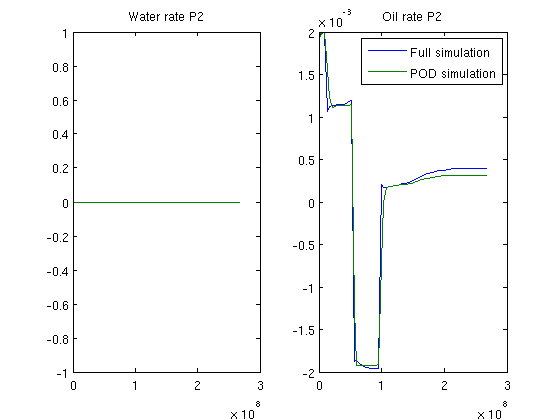

Reservoir simulation using Proper Orthogonal Decomposition (POD)
This example demonstrates the use of model reduction when solving a given system for many small variations of the same schedule. The example is meant to illustrate the principles, not best practice for real cases.
Contents
Setup
Load required modules and set random stream
require deckformat ad-fi s = RandStream('mcg16807','Seed',0); RandStream.setGlobalStream(s); % We set up a training simulation and an actual problem. The training % simulation has the same well and grid setupm, but the BHP of the % producers varies in the different simulations. current_dir = fileparts(mfilename('fullpath')); fn = fullfile(current_dir, 'training.data'); deck_training = readEclipseDeck(fn); deck_training = convertDeckUnits(deck_training); fn = fullfile(current_dir, 'problem.data'); deck_problem = readEclipseDeck(fn); deck_problem = convertDeckUnits(deck_problem); % The grid is common for both simulations grd = deck_training.GRID; G = initEclipseGrid(deck_training); G = computeGeometry(G); % rock - heterogenous field poro = gaussianField(G.cartDims, [.4 .8], [11 3 3], 2.5); K = poro.^3.*(1e-5)^2./(0.81*72*(1-poro).^2); rock.perm = K(:); rock.poro = poro(:); % fluid fluid = initDeckADIFluid(deck_training); gravity off state.pressure = 1.5e7*ones(G.cells.num, 1); state.s = ones(G.cells.num,1)*[0, 1]; schedule_training = deck_training.SCHEDULE; schedule_problem = deck_problem.SCHEDULE;
Solve full system for various parameters to create snapshot ensamble
systemOW = initADISystem({'Oil', 'Water'}, G, rock, fluid);
[wsol, states] = runScheduleADI(state, G, rock, systemOW, schedule_training);
Step 1 of 47 (Used 5 iterations) Step 2 of 47 (Used 4 iterations) Step 3 of 47 (Used 5 iterations) Step 4 of 47 (Used 4 iterations) Step 5 of 47 (Used 4 iterations) Step 6 of 47 (Used 4 iterations) Step 7 of 47 (Used 9 iterations) Step 8 of 47 (Used 10 iterations) Step 9 of 47 (Used 6 iterations) Step 10 of 47 (Used 5 iterations) Step 11 of 47 (Used 5 iterations) Step 12 of 47 (Used 5 iterations) Step 13 of 47 (Used 5 iterations) Step 14 of 47 (Used 5 iterations) Step 15 of 47 (Used 5 iterations) Step 16 of 47 (Used 5 iterations) Step 17 of 47 (Used 5 iterations) Step 18 of 47 (Used 8 iterations) Step 19 of 47 (Used 10 iterations) Step 20 of 47 (Used 7 iterations) Step 21 of 47 (Used 6 iterations) Step 22 of 47 (Used 5 iterations) Step 23 of 47 (Used 7 iterations) Step 24 of 47 (Used 6 iterations) Step 25 of 47 (Used 5 iterations) Step 26 of 47 (Used 4 iterations) Step 27 of 47 (Used 4 iterations) Step 28 of 47 (Used 8 iterations) Step 29 of 47 (Used 5 iterations) Step 30 of 47 (Used 5 iterations) Step 31 of 47 (Used 5 iterations) Step 32 of 47 (Used 5 iterations) Step 33 of 47 (Used 5 iterations) Step 34 of 47 (Used 4 iterations) Step 35 of 47 (Used 5 iterations) Step 36 of 47 (Used 5 iterations) Step 37 of 47 (Used 4 iterations) Step 38 of 47 (Used 7 iterations) Step 39 of 47 (Used 6 iterations) Step 40 of 47 (Used 6 iterations) Step 41 of 47 (Used 7 iterations) Step 42 of 47 (Used 7 iterations) Step 43 of 47 (Used 7 iterations) Step 44 of 47 (Used 6 iterations) Step 45 of 47 (Used 5 iterations) Step 46 of 47 (Used 4 iterations) Step 47 of 47 (Used 4 iterations)
Plot the simulation for all timesteps
The dominant producer switches between each control. This is obviously not a good schedule for oil production, but it gives a highly dynamic flow pattern.
figure(1); for i = 1:numel(states) clf; subplot(2,1,1) plotCellData(G, states{i}.pressure) title('Pressure') subplot(2,1,2) plotCellData(G, states{i}.s(:,1)) title('Water saturation') pause(.1); end
Create basis for proper orthogonal decomposition
When doing model reduction, parts of the model can be reduced based on the assumption that the eigenspace of the simulation is similar to the eigenspace of the history we are using to construct the basis. As the pressure solution is costly and in general very smooth, we opt to reduce the pressure variable. This is done by a singular value decomposition and then using the largest eigenvalues to find the eigenvalues which capture the most essential patterns of pressure.
We reduce the number of pressure variables from 900 to 25. Saturation is more difficult to reduce accurately, requiring a magnitude more variables and clustering of eigenvectors. This example defaults to no clustering as the implementation of clustering depends on an external package YAEL (https://gforge.inria.fr/)
ns = nan; np = 25; basis_no_cluster = basisOW(states,... 'energyfraction_pressure', 1,... 'energyfraction_saturation',1,... 'maxno_pressure', np,... 'maxno_saturation', ns... ); basis = basis_no_cluster; % Copy system systemOW_basis = systemOW; % Add basis, set max iterations as the solution will not generally converge % when approximated by another eigenspace. systemOW_basis.podbasis = basis; systemOW_basis.nonlinear.maxIterations = 6;
25 of 47 eigenvalues included Including saturation equations in full!
Run another schedule both using pod and a full solution
The schedule is the same in terms of well setup, grid, porosity/permeability as well as the general flow pattern, but the rates have been changed. This is typical of an optimization loop: Several similar configurations which share many properties will be solved, either manually by a reservoir engineer or by a automated optimization program.
In general, a model reduction will not converge fully. We simply limit the number of iterations. A more sophisticated approach would involve setting the convergence limits based on the amount of reduction done.
timer = tic; [wsol_full, states_full] = runScheduleADI(state, G, rock, systemOW, schedule_problem); tfull = toc(timer); warning('off', 'newt:maxit') timer = tic; [wsol_pod, states_pod] = runScheduleADI(state, G, rock, systemOW_basis, schedule_problem); tpod = toc(timer); warning('on', 'newt:maxit')
Step 1 of 52 (Used 5 iterations) Step 2 of 52 (Used 4 iterations) Step 3 of 52 (Used 5 iterations) Step 4 of 52 (Used 4 iterations) Step 5 of 52 (Used 4 iterations) Step 6 of 52 (Used 4 iterations) Step 7 of 52 (Used 9 iterations) Step 8 of 52 (Used 14 iterations) Step 9 of 52 (Used 9 iterations) Step 10 of 52 (Used 8 iterations) Step 11 of 52 (Used 8 iterations) Step 12 of 52 (Used 8 iterations) Step 13 of 52 (Used 9 iterations) Step 14 of 52 (Used 11 iterations) Step 15 of 52 (Used 7 iterations) Step 16 of 52 (Used 5 iterations) Step 17 of 52 (Used 6 iterations) Step 18 of 52 (Used 10 iterations) Step 19 of 52 (Used 7 iterations) Step 20 of 52 (Used 6 iterations) Step 21 of 52 (Used 6 iterations) Step 22 of 52 (Used 6 iterations) Step 23 of 52 (Used 6 iterations) Step 24 of 52 (Used 5 iterations) Step 25 of 52 (Used 7 iterations) Step 26 of 52 (Used 6 iterations) Step 27 of 52 (Used 6 iterations) Step 28 of 52 (Used 8 iterations) Step 29 of 52 (Used 5 iterations) Step 30 of 52 (Used 6 iterations) Step 31 of 52 (Used 5 iterations) Step 32 of 52 (Used 6 iterations) Step 33 of 52 (Used 6 iterations) Step 34 of 52 (Used 7 iterations) Step 35 of 52 (Used 7 iterations) Step 36 of 52 (Used 7 iterations) Step 37 of 52 (Used 7 iterations) Step 38 of 52 (Used 10 iterations) Step 39 of 52 (Used 8 iterations) Step 40 of 52 (Used 5 iterations) Step 41 of 52 (Used 5 iterations) Step 42 of 52 (Used 4 iterations) Step 43 of 52 (Used 3 iterations) Step 44 of 52 (Used 3 iterations) Step 45 of 52 (Used 4 iterations) Step 46 of 52 (Used 3 iterations) Step 47 of 52 (Used 3 iterations) Step 48 of 52 (Used 3 iterations) Step 49 of 52 (Used 4 iterations) Step 50 of 52 (Used 3 iterations) Step 51 of 52 (Used 3 iterations) Step 52 of 52 (Used 3 iterations) Step 1 of 52 (Used 6 iterations) Step 2 of 52 (Used 6 iterations) Step 3 of 52 (Used 6 iterations) Step 4 of 52 (Used 6 iterations) Step 5 of 52 (Used 6 iterations) Step 6 of 52 (Used 6 iterations) Step 7 of 52 (Used 6 iterations) Step 8 of 52 (Used 6 iterations) Step 9 of 52 (Used 6 iterations) Step 10 of 52 (Used 6 iterations) Step 11 of 52 (Used 6 iterations) Step 12 of 52 (Used 6 iterations) Step 13 of 52 (Used 6 iterations) Step 14 of 52 (Used 6 iterations) Step 15 of 52 (Used 6 iterations) Step 16 of 52 (Used 6 iterations) Step 17 of 52 (Used 6 iterations) Step 18 of 52 (Used 6 iterations) Step 19 of 52 (Used 6 iterations) Step 20 of 52 (Used 6 iterations) Step 21 of 52 (Used 6 iterations) Step 22 of 52 (Used 6 iterations) Step 23 of 52 (Used 6 iterations) Step 24 of 52 (Used 6 iterations) Step 25 of 52 (Used 6 iterations) Step 26 of 52 (Used 6 iterations) Step 27 of 52 (Used 6 iterations) Step 28 of 52 (Used 6 iterations) Step 29 of 52 (Used 6 iterations) Step 30 of 52 (Used 6 iterations) Step 31 of 52 (Used 6 iterations) Step 32 of 52 (Used 6 iterations) Step 33 of 52 (Used 6 iterations) Step 34 of 52 (Used 6 iterations) Step 35 of 52 (Used 6 iterations) Step 36 of 52 (Used 6 iterations) Step 37 of 52 (Used 6 iterations) Step 38 of 52 (Used 6 iterations) Step 39 of 52 (Used 6 iterations) Step 40 of 52 (Used 6 iterations) Step 41 of 52 (Used 6 iterations) Step 42 of 52 (Used 6 iterations) Step 43 of 52 (Used 6 iterations) Step 44 of 52 (Used 6 iterations) Step 45 of 52 (Used 6 iterations) Step 46 of 52 (Used 6 iterations) Step 47 of 52 (Used 6 iterations) Step 48 of 52 (Used 6 iterations) Step 49 of 52 (Used 6 iterations) Step 50 of 52 (Used 6 iterations) Step 51 of 52 (Used 6 iterations) Step 52 of 52 (Used 6 iterations)
Plot and compare the solutions
v = [0, 90]; figure(1); for i = 1:numel(states_pod) clf; subplot(2,2,1) plotCellData(G, states_full{i}.pressure) title('Pressure, full solve'); axis tight; cp = caxis(); subplot(2,2,2) plotCellData(G, states_full{i}.s(:,1)) title('Water saturation, full solve'); axis tight; colorbar(); cs = caxis(); view(v); subplot(2,2,3) plotCellData(G, states_pod{i}.pressure) title('Pressure, reduced solve'); axis tight; caxis(cp); subplot(2,2,4) plotCellData(G, states_pod{i}.s(:,1)) title('Water saturation, reduced solve'); caxis(cs); axis tight; err = @(x, y) abs(x-y)/x; colorbar(); view(v); pause(.1); end
Plot the well rates
The oil rate is in general close to the reference. The water cuts show a similar error. Note that this example was made to produce interesting flow patterns, not realistic production (oil is being injected during certain time steps).
In terms of time used, these examples are so small that the overhead of setting up the linear systems is large compared to the cost of solving the actual systems. As such, the model
time = cumsum(schedule_problem.step.val) ; [qWsp, qOsp, qGsp, bhpp] = wellSolToVector(wsol_pod); [qWsf, qOsf, qGsf, bhpf] = wellSolToVector(wsol_full); for i = 2:5 figure(i); clf; subplot(1,2,1) plot(time, -[qWsf(:,i) , qWsp(:,i)]) title(['Water rate ' wsol_full{1}(i).name]) subplot(1,2,2) plot(time, -[qOsf(:,i) , qOsp(:,i)]) title(['Oil rate ' wsol_full{1}(i).name]) legend({'Full simulation', 'POD simulation'}) end